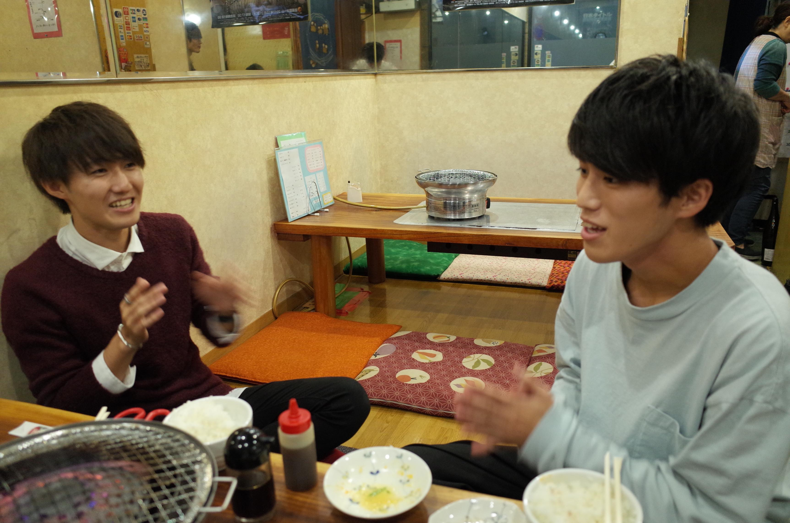

どれにしようかな…あっ、青森のりんごジュースあるじゃん！俺これで！
おっ、ホントだ！じゃあ俺は、りんご酢ソーダで！
にくまるさん リンゴジュースと、りんご酢ソーダですね～
僕青森出身なんですよ～！
にくまるさん あら、そうなの！
なんだか、メニュー見てると、青森のにんにくを使った料理だとか、青森関係のものが多いですね！ここって青森と関係のあるお店なんですか？
にくまるさん ぜんぜん関係ない～（笑）でも、いろんなところのおいしいものを揃えてるの！
おー！全国規模で認められた！青森！
じゃああとは、ネギタン塩、タン煮込み、にくまる豆腐と、ごはんください！
にくまるさん は～い！ごはんは、コシヒカリを使ってるのよ～
細部までこだわりがすごい！ じゃあ、ごはんの大1つ！
あ、すいません大2つで！
あ、すいません大3つで！
お前も食うんかい！
網と雰囲気を温めつつ...
先ほども青森出身、とおっしゃっていましたが、しんひろさんは、今は上京してきて一人暮らしなんですよね。一人でいることには慣れましたか？
一人でいる自体あまり抵抗はないかな。東京来て初めのうち、大学の友達ができるまでは一人だったから、定期券内で行ける渋谷とかに降りて、あ～こんな感じかって、一人で散歩してた。
そうなんですね！渋谷とかを歩いている中で、青森と東京だといろいろと違うこともあると思いますが、なにか東京に来てびっくりしたはありますか？
びっくりしたっていうか、東京の人は、みんな「我先に」すぎて、思いやりがないなって印象があったな。
なるほど、そういうところに違いが出てきているんですね。
.
ちょっとね、温かみをあまり感じなかった。そこが初めはちょっと寂しかったかな。逆に東京の人からすれば、どんくさいなって思われてたかもしれないけど。
いや、ずっとこの辺に住んでいる僕でも感じます、みんな時間に追われてばっかりいるなって。では逆に、東京に出てきて、ここはいいなと感じることはありますか？
あーなんだろ、でもやっぱりね、電車とかはすごい！
俺の住んでたところは、自分の家からの中心街までの終バスが７時半とかだったのよ。遊べないじゃん？帰省したときは、この年になったから夜遅くまで出歩けるようにはなるけど、終バスの時間は依然変わらないし。
その点こっちはどの街行っても遊び場そろってるし、電車もあるし。それがいいかなって。
それにやっぱ田舎にいるより刺激があると思う、人が多いだけあっていろんな人がいるし、すごい人がいっぱいいる。
確かに！首都なだけあっていろんな人が集まっていますよね！そういったところは意外とこの辺に住んでいる人だと気づかない良さかもしれないですね。
しょうたろうさんは、サークル長もされているんですよね！サークル長となると、リーダーシップを発揮しないといけない場面もあると思うんですが、やっていてどんな時に大変だなと感じますか？
そうだな、実はまだ始まってから数か月しかたってなくて、今のところこれといって大変なことは起きてない。ただ、それでも一人じゃ全然やっていけないこともあるかな。副代表とかにも頼ってるし...
意外と堅実なんですね...Twitterでみている感じだとムードメーカーというか、輪の中心になって盛り上がるのが好きな人、といった印象を受けました。
意外とそんなこともなくて、俺は一人でもごはん食べに行ったりするし、一人でいる時間も結構長い！
そうなんですか！そういえばミスコレの取材の中でも、好きな場所が「夜の公園」ってありましたよね。静かな場所が好きなんですか？
そうだね。バイト後、深夜12時とか１時とかに、公園にいるのが好きなの。まあ公園じゃなくてもいいんだけど。昼間騒いでいる分、夜とか一人の場所で静かにするのもいいかなと思って、１回行ったのがきっかけ。
いいですね！一人の時間を大切にできるって、大人の余裕を感じられますよね。
肉・オンザ・ネット
お～きた！
一同 乾杯！
ん、うまい！俺の知ってるやつじゃない、これ。
にくまるさん あれ、青森じゃないのかしら！？これ（笑）
いや、おいしいですよ！(笑)
焼くか！
よし、これ焼いてまうわ
やばいやばいやばい、肉おいしいところなのに、黒くなっちゃうよ！
あ～、うまい！うまい！うまい...
エコーも全部自分で言っていくスタイルなんですね
いやでもホントにうまい(笑) 焼肉食べられるってホントに幸せ！
俺、箸の持ち方変だよね？
そう？
じゃあいいや、あ～うまい！うまい！うまい...
「あなたの自信はどこから？」
ミスコンの話に戻ります。お二人のミスコンに出るきっかけとは何ですか？
きっかけは声をかけられたからなんだけど…そうだな～、退屈ではなさそうだから！今後の大学生活が面白いものになるのかなって。
しょうたろうさんらしいです(笑) しんひろさんは？
昔から学校行事が好きだったから、やるならやりたい！ってのがあったかな。せっかく声かけられたし、チャンスかなと思って。
そうなんですね！ただ、ミスコンって、体育祭や文化祭とは違って特殊ですよね。普通の学生が、ある日を境に急にモデルになるイベントってほかにないかと思います。それこそ今日みたいに、写真をバシバシ取られる経験って今までにありましたか？
いやないね～
なーい！写真撮られることなんか修学旅行ぐらいっしょ（笑）
では、急にモデルになることに対して、不安はありませんでしたか？
いや、俺は全然なかったよ。
まじか！いざやるとなったら全然大丈夫だったけど、最初はやべえなって思ってたよ(笑)
最初DHCで撮影したんだけど、いざカメラの前に立ってみたらハマってさ(笑) カメラマンともしゃべりながら楽しく撮影してたし、俺は全然、違和感なかったな。
確かに面白いなと思ったけど、俺は難しいなとも思った！
なるほど、二人で意見が割れましたね～！ミスコンでは自分に対してどれくらい自信があるかといったことも重要な要素だと思います。ここからは、そんな「自信」にまつわる質問をしていきたいと思います！
お！
いいよ！
でん！ 特別企画、「あなたの自信はどこから？」(ベンザブロック？)
おい～(笑)
あっ、俺の顔ちゃんと目つむってる(笑)
この企画を通して、どのくらいミスコンに対して自信があるのか、図っていきたいと思います！
いいね～！なかなかそういうの無かったよね(笑)
確かにその角度なかったね、新しい！
ありがとうございます！じゃあ第１問、ででん！（急にフランク）
「生まれ変わっても自分でありたいか！？」もしも人生１からやり直せるとしたら、もう１回同じ人生を歩みたいか、それとももっと違う人生を送りたいか！？
なるほどね。俺は、自分のままでいいかな。
かなりの自信を感じますね！
いやいやいや、今の人生に不満もないし友達にも環境にも恵まれてるし、普通に面白い人生だから、俺はこれでいい！
なんだかうらやましいな～(笑)
いやー難しいな、俺も自分でいいけど、ここまでいろんなこと経験してこれたから、違う人でもいろんな経験できるのかなって。だからそういう意味では、ほかの人生も歩んでみたいかも。
確かに、自信とは関係なくまたほかの人生を歩んでみたいという気持ちはありますよね～ でも、今の人生に不満はない！って言いきれるところは本当に素敵だと思います！
次いきます、でん！いいとこラリー大会！！
イエ―――イ！！…で、何するの？
テンポよく、どれだけ自分たちでいいところを挙げられるか！？を競うゲームです、さっき考えました
え、自分のいいところを言うの？
そう、自分自身のだから難しい！マジカルバナナなんかと同じ要領で、二拍おいてから、交互にひたすら自分のいいところ言っていく！
なるほど、OK～
え、待って全然思いつかない(笑) 自分のいいところいうの1番苦手かもしれない(笑)
よし、いくで～せーのっ！
待って早いよ～
せーの、
やさしい！
大食い！
笑顔が素敵！
やさしい！！
かわいい！
細い！
み、耳が良く聞こえる！
手がきれい！
目がきれい！
えーと目がきれい（笑）
鼻が…ふつう！(笑)
鼻が高い！
な、なんだろ…あ～っ！
もう1回やろもう1回！(笑)テンポ悪かったごめんね ！(笑)ちょっと被るのナシにしよ！
えー？またやるの？(笑) じゃあ相手と被るのナシで(笑)
もっかいいくよ、せーのっ！
女の子に優しい！
まじめ ！
んーと男の子にも優しい（笑）
みんなに優しい ！
かわいい！
細い！
笑顔が素敵！
たくさん食べる！
割とちゃんと二重！
奥二重！
瞳がきれい！
年上から可愛がられる！
髪が適度にくせ毛！
甘えん坊！
なで肩！
大人に優しい！
抱きしめてちょうどいい厚さ！（？）
抱きしめてちょうどいい位置！（？？）
脚が別に長すぎない（笑）
フレンドリー！
えーっと、みんなに、厳しい！
いやそれ違うだろ！！
でも意外と続くんですね！(笑) さすがミスター！
シンプルだけど割と面白かったこれ(笑)
じゃあ自信についての最後の質問にいきたいと思います！
ズバリ、グランプリの自信は！？
あー、どうだろうなあ～？
わかんなくね？ 実際のところ、全然見当つかないな。(笑)
気になるわ～6人の。今まで話したことないもん
話さないだろ、6人で集まって「俺グランプリ取れると思う！」「俺も！」「俺も！」とか（笑）でもやってるからには取りたいよね、グランプリをとれるっていう自信を持てるように、自分が納得いく努力を続けてます。
かっこいい！
いいこと言った！
決まった～(笑)
俺はねー、まだちゃんと深く考えたことないのよ、今のところノリと勢いだけでやってるから。ツイッター見てたらわかると思うんだけど、自分の生活の一部にミスターを組み込んでるんじゃなくて、 自分の生活の一部を、ミスターとして発信してるだけだから。このコンテストに対する特別な深い思い入れみたいのはないかな。 こんな俺でも、応援してくれる人がいるからには取りたいよね。
理科大生に、物申す！
理科大生の、ここがイイ、ここがダメ！って思うことはありますか？
そうだな、めっちゃ偏見なんだけど、理科大生はコミュニティが狭い気がする。
分かるそれ、たしかにね。
慶應とか早稲田だったらもっと広い気がする。大人、社会人とかもそうだし、理科大はなんだか、自分たちの中だけで、なんなら授業でしか学ぶ場がないって思ってる人が多いよね。
他大との交流が深いしんひろさんならではの視点ですね。僕も、もともと芸術系の大学に進学したかったこともあって、藝大の方とのつながりは大切にしています。ただまわりにはあまりそういった学生が少ないのかな、と思います。
でも逆に、ちゃんと授業受けて、自分の与えられた場の中ではしっかり学んでるっていう部分はいいところだよね。
確かに。予想以上にいい意見が聞けました(笑)
では最後に、そんな理科大生に一言お願いします！
おい理科大生、あんまり俺をチャラいって言わないでくれ！
おい理科大生、経営学部に偏見を持たないでくれ！
お肉、最後の一切れ残ってるから、
じゃんけんするか！
村松・大垣・山岸 じゃんけん...ポン！
お、勝った（笑）
お前が勝つんかい！